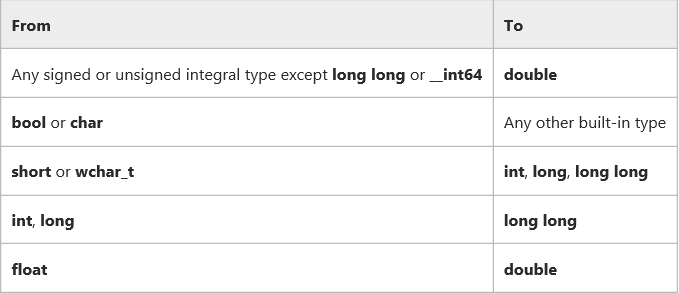

A good type system should stay out of the way of a programmer. It should allow a programmer to build their own types that are representative of the problem that they are trying to solve. It should allow these types to be used in the same way as built in types. C++ provides a rich set of types through the normal primitives as well as its standard library. C++ also provides ways to extend these types and to create user defined types which can be used in much the same way. This presentation is a look at the different types provided by C++.
We are using <type_traits> to talk about the C++ type system.
http://en.cppreference.com/w/cpp/header/type_traits
Each of the std::is_* represents a type trait in the standard library that can be used to evaluate a type. You will get more exposure to these in follow on assignments.
There are four main data models in use today.
The data model is an implementation choice of computer/software engineers about the sizes of fundamental types.
Other models do exists but are very rare. For example ILP64 (8/8/8: int, long, and pointer are 64-bit) do exists but only appeared in some early model 64-bit Unix systems (e.g. Unicos on Cray).
The Win16 API is a legacy system that was used in Windows 1.0 to Windows 3.11, and for backwards compatibility is support to Windows 95/Windows ME.
There are four main data models in use today.
This class will mostly be using ILP32 and LLP64 as we are on windows. I will work to show LP64 as well.
short int <= int <= long int <= long long int
What if your in a situation where you need to grantee that you type is a certain size on all architectures.
#include <cstdint> //since C++11 #include <stdint.h> //before C++11 uint32_t is_a_32_bit_unsigned_int; uint8_t is_a_8_bit_unsigned_char; int64_t is_a_64_bit_signed_int; uint_fast16_t is_whatever_the_fastest_16bit_type_for_the_machine_is;
x87 is a floating-point subset of the x86 architecture instruction set. Originated as an extension of the 8086 instruction set. This was back with coprocessors would work in tandem with x86 CPUs. The orginal x87 processor was 5 MHz. Todays processors are able to do these computation over 50,000 times faster.
C++ allows programmers to create their own types. The standard library is a collection of user defined types.
We will cover classes and structs in their own lecture.
enum Color {red, green, yellow}; Color light = red; switch(light) { case red : cout << "red light\n"; break; case green : cout << "green light\n"; break; case yellow: count << "yellow light\n"; break; }
enum Foo {a, b, c=10, d, e=1, f, g = f+c }; //a=0, b=1, c=10, d=11, e=1, f=2, g=12
enum name: type {enumerator = constexpr, enumerator = constexpr, ... }; // or better yet. enum class name: type {enumerator = constexpr, enumerator = constexpr, ...};
enum class Light : char {red='R', green='G', yellow='Y'}; enum class Color : int {red=100, yellow, green, blue, brown}; int main() { Color color = Color::red; Light light = Light::red; return 0; }
typedef union ARGB { uint32_t color; struct componentsTag { uint8_t a; uint8_t b; uint8_t g; uint8_t r; }components; }pixel; int main() { pixel p; p.color = 0x334455AA; std::cout << std::hex; std::cout << "R: 0x" << static_cast<short>(p.components.r) << "\n"; std::cout << "G: 0x" << static_cast<short>(p.components.g) << "\n"; std::cout << "B: 0x" << static_cast<short>(p.components.b) << "\n"; std::cout << "A: 0x" << static_cast<short>(p.components.a) << "\n"; return 0; }
Unions can also be useful to building a variant type of basic types. Unions can't hold complex types in pre C++11. C++11 allows for one data member that can have a default constructor.
There are many more literals in C++ than C. In C++ you can even create your own literals. C++ provides literals for:
Of the octal escape sequences, 0 is the most useful as it represents the terminating null character in a null-terminated string.
Mostly the same as character literals
//Raw String Examples auto str = R"foo("this is a raw string"/"I (can) use all kinds of 'characters'")foo";
A literal that represent NULL.
Why would we want that we already have NULL and 0?
void foo(int a) { //do something with a } void foo(char* a) { //do something with a } int main() { foo(0); //calls foo(int) foo(NULL); //calls foo(int) foo(nullptr); //calls foo(char*) }
TODO: Add more reason for nullptr here.
const declares variables that can't be modified. Pay careful attention to applying const to pointers.
const int a = 0xDEADBEEF; const int b = 0xCAFEF00D; int* const ptr1 = &a; //ERROR storing pointer to constant data in non-const pointer. const int* ptr2 = &a; ptr2 = &b; const int* const ptr3 = &a; ptr3 = &b; //ERROR pointer is const and can't be modified.
void bar(const int& foo) { //This prints the value of fooptr below. std::cout << "foo is at" << &foo << "\n"; } int main() { int foo = 0xCAFEF00D int& fooref = foo; int* fooptr = &foo; fooref += 0xEE0; //foo is now 0xCAFEFEED bar(foo); }
Concept: Value is not only constant but is also known at compile time! Reality: You can't assume the results of a constexpr function are const, nor that they are known at compile time.
constexpr int beef = 0xCAFEBEEF; constexpr int& beefref = beef; //bound to reference beef (can't be changed) constexpr int* beefptr = &beefref; //because beefref is a reference it can be used like beef static_assert(beef == beefref && beef == *beefptr, "These should all be equal here"); constexpr int square(int x) { return x*x; } int a[square(2)]; //allowed because of constexpr
static_assert is a compile time assert that will output the message argument as an error if the assertion fails. static_assert must be given a boolean condition that is constexpr.
class Point { double x_, y_; public: constexpr Point(double x = 0 , double y = 0) noexcept : x_{x}, y_{y} {} constexpr doube xValue() const noexcept {return x_;} constexpr double yValue() const no except {return y_;} void setX(double newX) noexcept {x_=newX;} void setY(double newY) noexcept {y_=newY;} }; constexpr Point p1(9.4, 27.7); constexpr Point p2(28.8, 5.3); constexpr midpoint(const Point& p1, const Point& p2) noexcept { return { (p1.xValue() + p2.xValue) / 2, (p1.yValue() + p2.yValue) / 2 }; } constexpr Point mid = midpoint(p1, p2); //THIS EXIST IN READ ONLY MEMORY!!!
constexpr int square(int x) { return x*x; } //OK constexpr long long_max() { return 2147483647; } //OK constexpr int abs(int x) { return x < 0 ? -x : x; } //OK constexpr void f(int x) { //... do stuff } //ERROR: return type is void constexpr int prev(int x) { return --x; } //ERROR: Use of decrement works with clang constexpr int g(int x, int y) //ERROR: C++11 doesn't allow this but C++14 does! { int r = 1; while (--n ) r *= x; return r; }
void fun(int i) { int array[i]; //This is ok in C++14 }
decltype(e) deduce and returns the type of its argument e.
auto c = 0; //c has type int auto d = c; //d has type int decltype(c) e; //e has type int, the type of the entity named by c decltype((c)) f = c; //f has type int&, because (c) is an lvalue decltype(0) g; //g has type int, because 0 is an rvalue
These semantics were designed to fulfill the needs of generic library writers, while at the same time being intuitive for novice programmers, because the return type of decltype always matches the type of the object or function exactly as declared in the source code. More formally, Rule 1 applies to unparenthesized id-expressions and class member access expressions. For function calls, the deduced type is the return type of the statically chosen function, as determined by the rules for overload resolution.
auto is a generic type that use type deduction to figure out the type at compile time. Auto has the following features.
int foo(int a, double b, char* c); int bar(int, double, char*); int main() { int (*fp)(int,double,char*) = &foo; // standard function pointer. auto auto_fp = foo; // function to pointer conversion const auto auto_fp2 = &foo; // equivalent to auto_fp auto& auto_fr = foo; // reference fp = &bar; auto_fp = &bar; auto_fp2 = bar; //ERROR would work if not const. auto_fr = bar; //COMPILATION ERROR }
C-style casts actually represent different types of cast in one operator
C++ separates these all out for safety reasons. C++ also adds one more type of cast.
These are safe to do because there is no potential for a loss of data. Because these are safe, the compiler will preform them silently and not issue any warnings.
These are the opposite of a widening conversion. Because they are a cast from a larger type to a smaller one there is a possibility for data loss, making the conversion potentially unsafe. If your sure that the conversion is ok and there will be no loss of data, use an explicit cast to get rid of the compiler warning.
int i = INT_MAX + 1; //integer overflow int j = 1.9f; //possible loss of data
I had to increase the warning level to 4 in visual studio to get these warning to show up.
This is allowed when there is a valid conversion in the language, or an appropriate constructor that makes it possible. The danger with static cast is casting down between inherited classes and narrowing conversions.
unsigned int big = 0xDEADBEEF; short a = big; //conversion from 'int' to 'short', possible loss of data short b = static_cast<short>(big); //no error
Usually a sign of a bad design and shouldn't be used in new projects. The purpose of const is to keep a developer from modifying the argument. const_cast removes this restriction and breaks promises to a user that you wouldn't modify the data.
const unsigned int a = 0xDEADBEEF; unsigned int& b = const_cast<unsigned int&>(a); b += 1; //a and b == 0xDEADBEF0;
This is also usually a sign of bad code.
Converts between types by reinterpreting the underlying bit pattern.
int i = 7; char* p2 = reinterpret_Cast<char*>(&i); if(p2[0] == '\x7') std::cout << "This system is little-endian\n"; else std::cout << "This system is big-endian\n";
Smart pointers are a better way to utilize memory in C++. They overcome many of the problems with normal pointers and better express the meaning of a particular pointer. It is still valid to pass pointers in C++ but this conveys nothing about ownership. The smart pointers that we will be discussing were added to the standard in C++11.
All of these types are a part of the standard library.
- It keeps track of the number of users
- When all users are done with it, it frees the memory.
void foo(shared_ptr<int> bar) { std::cout << *bar << std::endl; } int main() { auto bar = std::make_shared<int>(0); std::cout << "Enter a number: "; std::cin >> *bar; foo(bar); return 0; }
One important thing to note is that there are no news or deletes in this code. There is nothing that needs to be reviewed to find all cases that we may need to free our dynamic memory. It is all handled by the shared_ptr.
void foo(std::unique_ptr<int> bar) { std::cout << *bar << std::endl; } int main() { auto bar = std::make_unique<int>(0); std::cout << "Enter a number: "; std::cin >> *bar; foo(std::move(bar)); //bar is nullptr return 0; }
std::weak_ptr<int> gw; void f() { if (auto spt = gw.lock()) { // Has to be copied into a shared_ptr before usage std::cout << *spt << "\n"; } else { std::cout << "gw is expired\n"; } } int main() { { auto sp = std::make_shared<int>(42); gw = sp; f(); // 42 } f(); // gw is expired }
| Space | Forward |
|---|---|
| Right, Down, Page Down | Next slide |
| Left, Up, Page Up | Previous slide |
| P | Open presenter console |
| H | Toggle this help |